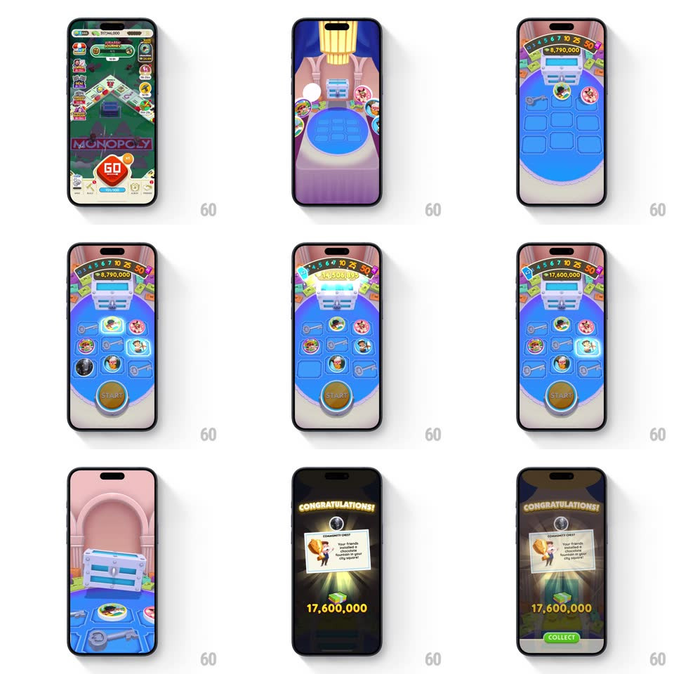

Media
Frame-by-frame

Rebuild this interaction 1:1: Monopoly GO's Community Chest - the board transitions into a 3D vault where a chest sits on a glowing podium ringed by friends' avatar keys; a dial spins through prize tiers, the pot climbs into the millions, and a "CONGRATULATIONS!" reward card lands with a COLLECT button.

Rebuild this interaction 1:1: Monopoly GO's Community Chest - the board transitions into a 3D vault where a chest sits on a glowing podium ringed by friends' avatar keys; a dial spins through prize tiers, the pot climbs into the millions, and a "CONGRATULATIONS!" reward card lands with a COLLECT button. ## Integration Integration: stack-agnostic spec - springs given as stiffness/damping, timed motions as duration + curve; map every value to your framework and animation library of choice. ## Scene Board view, then a vaulted pink chamber: a blue chest on a circular podium, a semicircular prize dial (tiers 3-50) arching above, and a ring of key slots with friends' avatars. End: dark reward screen, golden "CONGRATULATIONS!" arch, a Community Chest card (Mr. Monopoly with a money bag), the total "17,600,000" in gold, a green COLLECT button. ## Motion spec Pattern: multi-stage vault ceremony. - Transition: the board's chest marker grows and the camera dives INTO it (scale-through, 700ms, ease-in) - the vault assembles around the viewer (walls rising 400ms, podium glowing on). - Keys phase: avatar keys ignite around the ring one by one (pop scale 0 -> 1, spring ~420/16, 90ms apart) as the pot counter starts rolling upward (digits ticking, accelerating). - The dial: its pointer sweeps the tier arch (1.2s, ease-out with a spring settle ~260/14 on the final tier) while the pot jumps in chunks (8,790,000 -> 17,600,000, each jump a digit-roll + green flash). - The chest lid springs open (rotateX spring ~300/14, gold light shaft + coins fountain, 900ms). - Reward: the chamber dims, the CONGRATULATIONS arch types on letter-by-letter (30ms stagger), the card rises with a spring (~340/18), and COLLECT pulses (scale 1 -> 1.06, 1.2s). ## Calibration - Every stage has one focal motion - keys, then dial, then chest, then card. Never two at once. - The pot counter never stops moving during the ceremony - anticipation is the mechanic. ## Reduced motion Crossfade between stages; no camera dive or particles. ## Don't miss - The scale-through transition - you ENTER the chest's world instead of opening a screen. - Friends' avatars on the keys - the "community" is literal.